Voice Agent Lab


Voice waveform, microphone and the official Sarvam wordmark. Sarvam refers to the conversational evaluations.
Open individual SVGIndividual design proposals for review. Open any patch to inspect its standalone vector artwork.

Voice waveform, microphone and the official Sarvam wordmark. Sarvam refers to the conversational evaluations.
Open individual SVGAn open book, student figures and a checked academic planner. Generic symbols only; no product screen or private data.
Open individual SVG
AR framing corners around an object outline, with API and Unity references. A team-project badge, not a project screenshot or architecture diagram.
Open individual SVGExpense ledger lines, a euro currency sign, API braces and a FastAPI label. No invented balances or transaction examples.
Open individual SVG
A graphic split-flap board with center hinges, warm white letters and orange accents drawn from the existing project screenshot. Enhanced fork attribution stays outside the artwork.
Enhanced fork of FlipOff; original attribution remains with the project.
Open individual SVG
A large circular crop of the actual simulation fills the patch, with Satellites and OpenMP / OpenCL lettering over the image. Performance labels are excluded.
Individual Tampere University course exercise, based on university-provided starter code. Demo crop carries no performance claim.
Open individual SVG
A vertically elongated white patch with black binding, a large portrait above lighter Graduate / 2026 lettering.
Open individual SVG